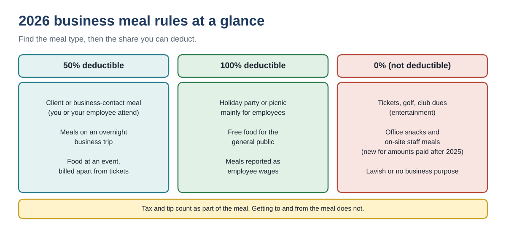
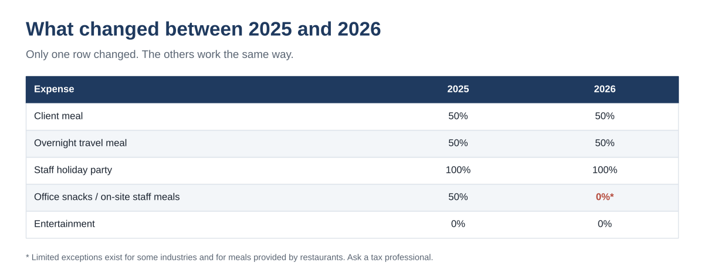
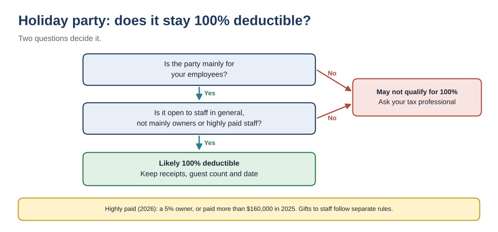

Business Meals and Holiday Party Deductions in 2026: What Is 50%, 100% and 0% Now
↓ Get the free Excel + PDF kit for this article
A client lunch, a box of donuts for the team and a December party all look like "meals" on a credit card statement. For taxes they are three different things. One is 50% deductible, one is now 0%, and one can be 100% deductible.
2026 adds a twist: snacks and meals a business provides to its own staff at the office were 50% deductible through 2025, and for amounts paid after 2025 most of them are no longer deductible at all. This guide lays out the 2026 rules, shows how to log a meal so the deduction holds up, and works through a full year of examples.
Who this is for: owners of small businesses, sole proprietors and bookkeepers who pay for meals, staff food or a holiday party and want the right deductible amount in the books before year-end.
The 2026 meal rules at a glance
Find the type of meal first. The type decides the percentage. All figures are federal and come from IRS Publications 463 and 15-B (sources at the end).
| Meal type | Deductible | Notes |
|---|---|---|
| Client or business-contact meal | 50% | Not lavish; you or your employee must be present |
| Meals on an overnight business trip | 50% | Keep trip dates and purpose |
| Food at an entertainment event, billed separately | 50% | Must be listed apart from the tickets |
| Holiday party or picnic mainly for employees | 100% | Not if mainly for owners or highly paid staff |
| Food given free to the general public | 100% | For example, a grand-opening table |
| Meals reported as wages to an employee | 100% | Shown on the employee's pay |
| Office snacks / on-site meals for staff | 0% | For amounts paid after 2025 (limited exceptions) |
| Entertainment: tickets, golf, club dues | 0% | Entertainment is not deductible |

Two details apply to every row. Sales tax and tip are part of the meal cost. The cost of getting to and from the restaurant is not part of the meal; it is a travel or car expense instead.
What changed for 2026
Through 2025, food and drink a business gave its employees at the workplace (break-room snacks, catered lunches during busy season, an on-site cafeteria) was generally 50% deductible. For amounts paid after December 31, 2025, an employer generally cannot deduct food and drink provided through an on-site eating facility or for the employer's convenience. The law includes limited exceptions, for example for certain restaurant businesses; if you think one applies to you, confirm it with a tax professional before using anything other than 0%.

What did not change: a holiday party or picnic held mainly for employees is still in the 100% group. The new rule targets everyday food at the workplace, not the year-end party.
Step by step: log a meal and find the deductible part
- Record the facts right away. Date, restaurant name and location, total paid (with tax and tip), who attended and their business relationship, and the business reason. A note written the same day is far stronger than a reconstruction in April.
- Pick the meal type from the table above.
- Multiply the total by that type's percentage. A $186.40 client lunch × 50% = $93.20 deductible.
- Check the receipt rule. For any meal of $75 or more, keep a receipt or similar proof. A restaurant receipt usually works if it shows the name and location, number of people, date and amount. Add the business reason yourself.
- Book it to the right account. Use separate expense accounts (for example "Meals 50%", "Meals 100%" and "Entertainment / staff snacks, nondeductible") so your preparer can read the totals without re-sorting every receipt.
A worked example: one year of meals
Here is a small business with eight meal-related expenses in 2026. The amounts are examples.
| Date | Expense | Paid | % | Deductible |
|---|---|---|---|---|
| Jan 14 | Client lunch, contract review | $186.40 | 50% | $93.20 |
| Feb 3 | Airport meal, overnight trade show | $23.80 | 50% | $11.90 |
| Mar 19 | Office snacks for the team | $64.25 | 0% | $0.00 |
| Apr 22 | Lunch with a prospect | $58.10 | 50% | $29.05 |
| Jun 6 | Grand-opening food for the public | $312.00 | 100% | $312.00 |
| Aug 27 | Ball game tickets with a client | $240.00 | 0% | $0.00 |
| Sep 10 | Vendor dinner | $92.50 | 50% | $46.25 |
| Dec 18 | Year-end staff party | $1,450.00 | 100% | $1,450.00 |
| Total | $2,427.05 | $1,942.40 |
Total spent is $2,427.05, but the deductible amount is $1,942.40. The four 50% meals add up to $360.80, of which $180.40 is deductible. The public grand-opening food and the staff party add $1,762.00 at 100%. The office snacks and the ball game tickets add nothing.
If those office snacks had been bought in 2025, half of the $64.25 would have been deductible. In 2026 the same purchase is $0, which is why snack and catering costs deserve their own account starting January 1.
The holiday party: when it stays 100% deductible
Food, drinks and other costs for a party or picnic held primarily for the benefit of employees can be 100% deductible. Two questions decide it.

- Mainly for employees. A party for the whole staff qualifies. An event that is really a client-entertainment night does not.
- Not mainly for highly paid people. For 2026, a highly compensated employee is generally a 5% owner (this year or last year) or someone paid more than $160,000 in 2025.
- Spouses and guests can attend; count everyone for your cost-per-guest record.
Example: a December party for 18 guests costs $1,450 (venue $400, food $650, drinks $220, music $150, decorations $30). That is about $80.56 per guest. Because it is open to all staff, the full $1,450 is likely deductible. Keep the receipts, the guest count and the date.
Gifts are separate. Gift cards, cash and most prizes handed out at the party are not "party costs." Cash and gift cards to employees are generally taxable wages. Ask your payroll provider before December payroll runs.
Records the IRS expects
- Amount, date, place, and who attended
- Business relationship of each guest (client, vendor, employee)
- Business reason: what was discussed or expected
- Receipt for each meal of $75 or more
- Keep records generally for 3 years from the date you file the return that claims the deduction
Common mistakes
- Booking every restaurant charge at 100%. Most client meals are 50%.
- Deducting tickets, golf or club dues. Entertainment is 0%, even with a client present. Food on the same bill can be 50% only if it is stated separately.
- Leaving 2026 office snacks at 50% because that is how 2025 was set up.
- Putting staff gift cards under "party costs" instead of payroll.
- Writing the business reason months later from memory.
Year-end checklist
- ☐ Split meals into 50%, 100% and nondeductible accounts
- ☐ Move 2026 office snacks and staff catering to the nondeductible account
- ☐ Party: confirm it is open to staff in general; save every receipt; record the guest count
- ☐ Find missing receipts for any meal of $75 or more
- ☐ Add a business reason to every meal row
You can download the ready-made Business Meals & Holiday Party Log 2026 for free in the Free kit download box below. It has a quick check for one meal, a meal log that flags missing receipts and reasons, monthly totals and a party planner, with a 4-page PDF guide.
This article is for education only and is not tax, legal or accounting advice. It does not cover per diem rates, special rules for transportation workers, state income tax or business gifts to clients. Rules can change; confirm your situation with a qualified tax professional.
Free kit download
Tools to follow this article step by step. No sign-up needed.
- Excel workbook (.xlsx)Business_Meals_and_Holiday_Party_Log_2026_EN.xlsx · 23 KB
- Step-by-step guide (PDF)Business_Meals_and_Party_Deduction_Guide_2026_EN.pdf · 57 KB
Free to use for yourself and your own business; please do not resell or redistribute. General information, not tax, legal or accounting advice; check every figure against your own records.